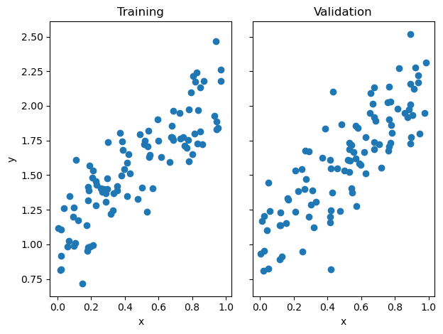
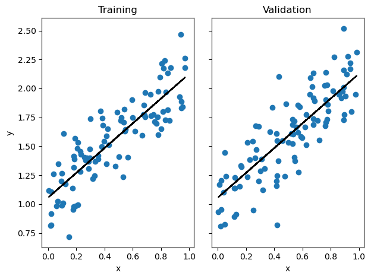
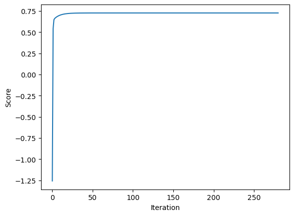
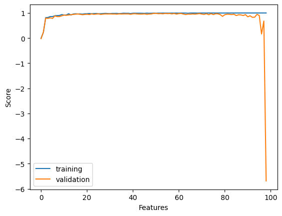
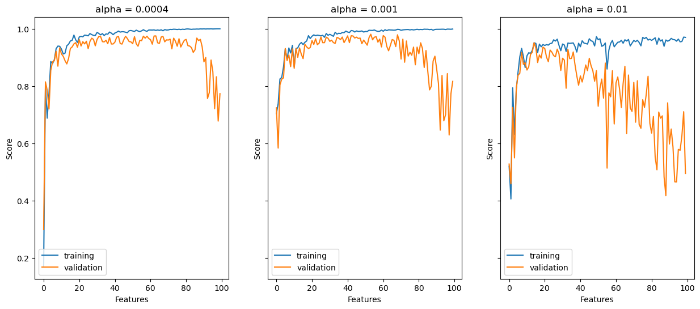

import numpy as np
from matplotlib import pyplot as plt
from sklearn.linear_model import Lasso
import pandas as pd
from sklearn.model_selection import train_test_splitImplementing Linear Regression
Regression, as opposed to classification, is a method to predict a real number for each data point based on its features. This post will focus on least squares linear regression, which falls into our framework of convex linear models.
The following post begins by implementing least-squares linear regression in two ways: using the analytical formula for the optimal weight vector (requiring matrix inversion and several matrix multiplications), and using the formula for the gradient of the loss function to implement gradient descent for linear regression.
To view the source code, pelase follow this link: https://github.com/madgallop/madgallop.github.io/blob/main/posts/linear_regression_blog/linear_regression.py
Set up
First, import required packages:
Now, create a function to make both testing and validation data to test the implementation:
def pad(X): #ensure X is the proper shape
return np.append(X, np.ones((X.shape[0], 1)), 1)
def LR_data(n_train = 100, n_val = 100, p_features = 1, noise = .1, w = None):
if w is None:
w = np.random.rand(p_features + 1) + .2
X_train = np.random.rand(n_train, p_features)
y_train = pad(X_train)@w + noise*np.random.randn(n_train)
X_val = np.random.rand(n_val, p_features)
y_val = pad(X_val)@w + noise*np.random.randn(n_val)
return X_train, y_train, X_val, y_valVisualize the testing and validation data:
n_train = 100
n_val = 100
p_features = 1
noise = 0.2
# create data
X_train, y_train, X_val, y_val = LR_data(n_train, n_val, p_features, noise)
# plot it
fig, axarr = plt.subplots(1, 2, sharex = True, sharey = True)
axarr[0].scatter(X_train, y_train)
axarr[1].scatter(X_val, y_val)
labs = axarr[0].set(title = "Training", xlabel = "x", ylabel = "y")
labs = axarr[1].set(title = "Validation", xlabel = "x")
plt.tight_layout()
It is only possible to easily visualize this problem when p_features = 1. Now, let’s implement linear regression using two different methods.
Implementation: Analytical Formula
We begin by implementing the analytical formula for the optimal weight vector w_hat from the lecture notes. The following is the explicit formula for w:
\[\\{\\{wHat}}={(X^TX)^{-1}X^Ty}\]
First, auto-refresh the source code:
%load_ext autoreload
%autoreload 2from linear_regression import LinearRegression #call method from source code
LR = LinearRegression()
LR.fit_analytical(X_train, y_train) #use implementation of above formula
print(f"Training score = {LR.score(X_train, y_train).round(4)}")
print(f"Validation score = {LR.score(X_val, y_val).round(4)}")Training score = 0.7271
Validation score = 0.6894The score (coefficient) is always smaller than 1, with a higher value indicating better predictive performance. As usual, gaps between the training and validation scores suggest the possibility of overfitting, although further investigation is required to see whether improvement on validation data is possible. In this case, the gap between the scores is relatively small.
The estimated weight vector w is:
LR.warray([1.07026516, 1.05566706])Now, let’s visualize the performance of the analytic formula on our training and validation data.
# plot it
fig, axarr = plt.subplots(1, 2, sharex = True, sharey = True)
axarr[0].scatter(X_train, y_train)
axarr[1].scatter(X_val, y_val)
labs = axarr[0].set(title = "Training", xlabel = "x", ylabel = "y")
labs = axarr[1].set(title = "Validation", xlabel = "x")
axarr[0].plot(X_train, LR.predict(X_train), color = "black")
axarr[1].plot(X_val, LR.predict(X_val), color = "black")
plt.tight_layout()
These predicted regression lines coorespond pretty well with both the training and test data! Let’s compare the weights and scores using the analytical method to those using gradient descent.
Implementation: Gradient Descent
The following is the formula for the gradient that our source code implements:
\[\\{\\{w^{(t+1)}}}={w^{(t)}- \alpha (Pw ^{(t)}-q})\]
Now, let’s see if we get the same weight vector from this method using the same testing and training data:
LR2 = LinearRegression() #call method
LR2.fit_gradient(X_train, y_train, alpha = 0.01, max_iter = 100) #gradient does not have the divide by points thing, need to adapt the learning rate to account for fact gradietn is too bigh .
LR2.warray([1.07026515, 1.05566706])This method lends the same value for w as the analytic method. Now, let’s visualize how the score using gradient descent changes over time.
plt.plot(LR2.score_history)
labels = plt.gca().set(xlabel = "Iteration", ylabel = "Score")
As pictured, the score increases monotonically in each iteration, increasing rapidly until about 50 iterations, and then increasing at a much slower rate. Now, we will experiment with increasing the number of features.
Experiments
In the following experiment, I allow p_features, the number of features used, to increase, while holding n_train, the number of training points, constant. I then assess and explain the differences between the training and validation scores.
LR_ex = LinearRegression()
n_train = 100
n_val = 100
noise = 0.2
trainScoreArray = []
testScoreArray = []
for feature in range(0,(n_train-1)):
p_features = feature
X_train, y_train, X_val, y_val = LR_data(n_train, n_val, p_features, noise)
LR_ex.fit_analytical(X_train, y_train)
trainScore = LR_ex.score(X_train, y_train).round(4)
testScore = LR_ex.score(X_val, y_val).round(4)
trainScoreArray.append(trainScore)
testScoreArray.append(testScore)
plt.plot(trainScoreArray, label = 'training')
plt.plot(testScoreArray, label = 'validation')
labels = plt.gca().set(xlabel = "Features", ylabel = "Score")
plt.legend(loc="lower left")
plt.show()

As the number of features in this experiment increases, the validation score tends to decrease relative to the training score. It follows that increasing the number of features leads to overfitting, where the model is too finely tuned to the training data. An overfit model struggles to simply representing overarching trends. In this case, as the number of features approaches the number of training points, the model began scoring much more highly on the training data (show in blue) while not achieving as high of an accuracy score for the test data (shown in orange). Next, we will try to combat overfit models using LASSO regularization.
LASSO Regularization
The LASSO algorithm uses a modified loss function with a regularization term, the effect of which is to make the entries of the weight vector w small. The LASSO algorithm tends to force each entry of the weight vector to be exactly zero. This is a helpful property in overfitted problems, especially when the number of features p is larger than the number of data points n.
L = Lasso(alpha = 0.001)Here, alpha controls the strength of the regularization. Now, let’s fit this model on some data and check the coefficients:
p_features = n_train - 1
X_train, y_train, X_val, y_val = LR_data(n_train, n_val, p_features, noise)
L.fit(X_train, y_train)Lasso(alpha=0.001)In a Jupyter environment, please rerun this cell to show the HTML representation or trust the notebook.
On GitHub, the HTML representation is unable to render, please try loading this page with nbviewer.org.
Lasso(alpha=0.001)
Now, let’s calculate the score:
L.score(X_val, y_val)0.8268398547106713The LASSO algorithm yields a high validation score.
Now, I will replicate the same experiment I did with linear regression, increasing the number of to exceed the number of training points using the LASSO algorithm. The following also experiments with different values of alpha.
L1 = Lasso(alpha = 0.001)
n_train = 100
n_val = 100
noise = 0.2
trainScoreArray = []
testScoreArray = []
#alpha = 0.001
for feature in range(1,(n_train+1)):
p_features = feature
X_train, y_train, X_val, y_val = LR_data(n_train, n_val, p_features, noise)
L1.fit(X_train, y_train)
trainScore = L1.score(X_train, y_train).round(4)
testScore = L1.score(X_val, y_val).round(4)
trainScoreArray.append(trainScore)
testScoreArray.append(testScore)
#alpha = 0.01
L2 = Lasso(alpha = 0.01)
trainScoreArray2 = []
testScoreArray2 = []
for feature in range(1,(n_train+1)):
p_features = feature
X_train, y_train, X_val, y_val = LR_data(n_train, n_val, p_features, noise)
L2.fit(X_train, y_train)
trainScore2 = L2.score(X_train, y_train).round(4)
testScore2 = L2.score(X_val, y_val).round(4)
trainScoreArray2.append(trainScore2)
testScoreArray2.append(testScore2)
#alpha = 0.0001, made 0.0004 to allow model to converge
L0 = Lasso(alpha = 0.0004)
trainScoreArray0 = []
testScoreArray0 = []
for feature in range(1,(n_train+1)):
p_features = feature
X_train, y_train, X_val, y_val = LR_data(n_train, n_val, p_features, noise)
L0.fit(X_train, y_train)
trainScore0 = L0.score(X_train, y_train).round(4)
testScore0 = L0.score(X_val, y_val).round(4)
trainScoreArray0.append(trainScore0)
testScoreArray0.append(testScore0)
fig, axarr = plt.subplots(1, 3, sharex = True, sharey = True, figsize = (15,6))
#alpha = 0.0001
axarr[0].plot(trainScoreArray0, label = 'training')
axarr[0].plot(testScoreArray0, label = 'validation')
labels = plt.gca().set(xlabel = "Features", ylabel = "Score")
axarr[0].legend(loc="lower left")
axarr[0].set(xlabel = "Features", ylabel = "Score", title = "alpha = 0.0004")
#alpha = 0.001
axarr[1].plot(trainScoreArray, label = 'training')
axarr[1].plot(testScoreArray, label = 'validation')
labels = plt.gca().set(xlabel = "Features", ylabel = "Score")
axarr[1].legend(loc="lower left")
axarr[1].set(xlabel = "Features", ylabel = "Score", title = "alpha = 0.001")
#alpha = 0.01
axarr[2].plot(trainScoreArray2, label = 'training')
axarr[2].plot(testScoreArray2, label = 'validation')
labels = plt.gca().set(xlabel = "Features", ylabel = "Score")
axarr[2].legend(loc="lower left")
plt.title("alpha = 0.01")
axarr[2].set(xlabel = "Features", ylabel = "Score", title = "alpha = 0.01")
plt.show()

Compared to standard linear regression, the LASSO algorithm tends to improve the validation score relative to the training score, especially when alpha (regularization strength) is small. For example, in standard linear regression, after about 95 features, the validation score dips into the negatives. Using the LASSO algorithm, the validation score never dips below 0.4, even when alpha is larger. Finally, let’s apply the linear regression algorithm to a real-world dataset.